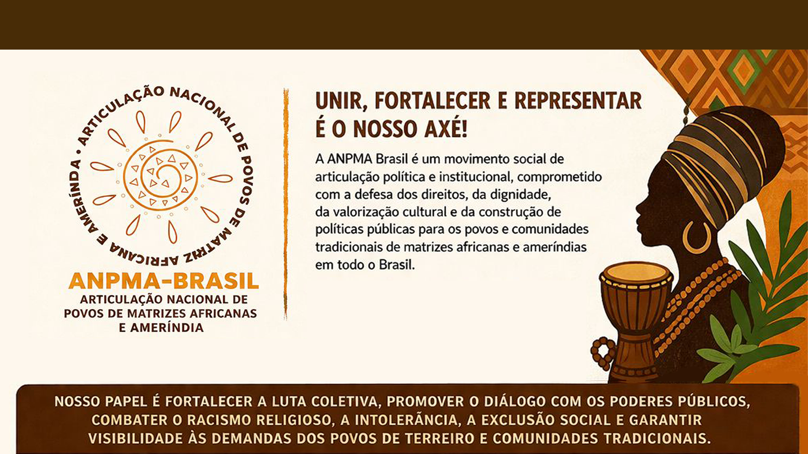

Unir, Fortalecer e Representar é o Nosso Axé!
Articulação, políticas públicas e resistência para os povos de axé e de lutas ancestrais em todo o Brasil.

Somos Resistência, Organização e Luta Coletiva
A ANPMA Brasil é um movimento social de articulação política e institucional, comprometido com a defesa dos direitos, da dignidade e da valorização cultural dos povos e comunidades tradicionais de matrizes africanas e ameríndias.
Não somos federação religiosa, tampouco uma entidade voltada à disputa interna entre casas ou terreiros. Nosso papel é fortalecer a luta coletiva, promover o diálogo com os poderes públicos e combater o racismo religioso e a intolerância.
Nossa Missão
Defender a ancestralidade, a liberdade religiosa, a cultura afro-indígena, o turismo de base comunitária, a economia solidária e a justiça social.
Nossa Atuação
Pautamos a articulação de políticas públicas para garantir direitos fundamentais.
Direitos e Território
Defesa intransigente dos direitos humanos e territoriais das comunidades tradicionais.
Combate ao Racismo
Enfrentamento ativo ao racismo religioso e à intolerância em todas as suas formas.
Cultura e Economia
Incentivo à cultura, turismo de base comunitária e economia solidária e criativa.
Justiça Social
Garantia de acesso à saúde, educação, cidadania e valorização dos saberes tradicionais.
Estrutura do Movimento
Atuamos em rede, valorizando a liderança e a autonomia de cada município e região.
Papel do Coordenador Municipal
Organizar, mobilizar e articular ações no seu município, ouvindo os terreiros e construindo agendas coletivas junto às instituições.
Quem Pode Coordenar?
Pessoas de axé comprometidas com a luta coletiva. Não é obrigatório ser sacerdote/sacerdotisa, mas ter respeito e anuência da comunidade.
Coordenadores Regionais
Acompanhar e integrar núcleos municipais, promovendo formação política e dialogando com governos e órgãos públicos.
Onde houver um terreiro ou povo invisibilizado, ali deve estar a força da articulação popular!
Por um Brasil plural, justo e livre de intolerância.